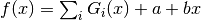

fitting.gaussians_line¶
-
fitting.gaussians_line(x, a, b, *p)¶ Sum over a variable number of Gaussians on a linear background.
Parameters: - x (array) – x-values.
- a (float) – y-intercept.
- b (float) – Slope.
- p (variable) –
Coefficients for Gaussians. For each Gaussian provide
- A amplitude,
- x0 center,
- dx FWHM.
Returns: Sum over Gaussians .
See also
gaussians()for details.